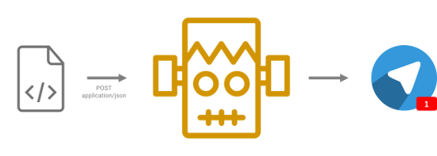
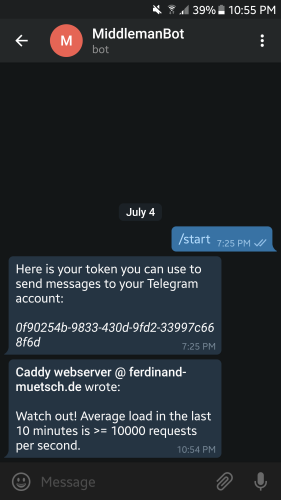

Middleman Bot - Push notifications as easy as POST

E-Mails are so 2010
E-Mails are everywhere. Literally anybody who gets in contact with a computer in some way will use the electronic mail system, which dates back to 1971. And certainly the E-Mail still has its right to exist, even in 2017. Especially in a business context it simply makes sense for many use cases - however not for all of those it is nowadays used for. The smaller the piece of information you want to communicate is, the less efficient e-mails are. Due to tons of header rows and other heavy load, a mail has a large overhead. Just look at a small random sample of mail from your inbox, find out the core information you get from it and look at the file size. Often you will find an overhead of more than 70 %. Great examples are subscription mails from online forum posts. Their essential information is basically only one bit in size, namely that something new has happened. However, they usually contain lots of HTML code, CSS, attachment pictures and some boilerplate text. Another example is those chatty-like conversations between two or more people, where each of them responds with only a few words to his conversation partner’s last question or the like. Although only few words are added, the whole previous mail is replicated again, enriched with some headers and then sent to the server, where it is stored and delivered to the recipients. I’m glad that for those cases apps like Slack are gradually establishing and I hope they will replace the e-mail some day. Anyway, I get off the topic. This shouldn’t be a hate letter against the e-mail. Rather I want to present another bot for the Telegram instant messenger.
The pain I had
It mainly aims at developers and sysadmins, but is not limited to these addressees. Once I had the problem that I wanted to code a little watcher that regularly visits my university’s website to check whether an announcement about the exam results has been made and notify me, if that was the case. The only way for realizing that notification that came to my mind was to send an e-mail. However, I had to integrate an SMTP library into my script then, which authenticates against my mail server using my account credentials - comparatively high effort. Then I wanted to write a little script that runs on my server in regular intervals to gather some basic statistics from log files and databases and send them to me so I could passively consume them (instead of me having to actively go to some webpage or so). Again, same problem.
The simple solution I created
For these reasons I created the Middleman Bot. It takes a simple, small JSON fragment as an input via HTTP call and forwards it to my Telegram chat. There’s no need for an additional library (nearly every programming language has a built-in API for HTTP calls or you could use cURL) or authentication process. Simply register at the bot once and fire lightweight HTTP calls afterwards.
Example
To make my webserver send me a notification when its load is above a certain threshold, the only thing it would need to do is a POST http://middleman.ferdinand-muetsch.de/api/messages with this body:
|
|
The token is your unique identifier the bot uses internally to decide to which chat / recipient to route an incoming message to. (For the trolls among you: I’ve invalidated the token from the example, so nobody could spam me.)
And there you go.

Give it a try
I’ve pushed the code as well as some introductions on how to run and use that bot to GitHub at n1try/telegram-middleman-bot. You can either run your own instance of the bot or use mine, which is running at http://middleman.ferdinand-muetsch.de. Let me know what you think!